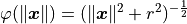

pygem.radial.RBF.inv_multi_quadratic_biharmonic_spline¶
-
static
RBF.inv_multi_quadratic_biharmonic_spline(X, r)[source]¶ It implements the following formula:

Parameters: - X (numpy.ndarray) – the vector x in the formula above.
- r (float) – the parameter r in the formula above.
Returns: result: the result of the formula above.
Return type: